Manual de Administrador
Centro de Soporte Informático
Guía para Administradores del Sistema CSI
Versión 1.0
Abril 2026
1. Inicio de Sesión
Para acceder al sistema como administrador, abra su navegador web y diríjase a la dirección del sistema CSI.
- Ingrese su Usuario y Contraseña
- Haga clic en "Iniciar Sesión"

PANTALLA 1: Login
Importante: Sus credenciales son personales. No las comparta con terceros.
Al iniciar sesión como administrador, verá las siguientes opciones:
| Opción | Descripción |
|---|
| Inicio | Inicio con estadísticas generales |
| Usuarios | Administrar usuarios del sistema |
| Todos los Tickets | Ver todos los tickets del sistema |
| Mis Tickets | Ver tickets que ha creado |
| Nuevo Ticket | Crear un nuevo ticket |
| Mi Perfil | Editar datos personales |
| Reportes | Ver reportes y estadísticas |
| Dependencias | Administrar dependencias |
| Áreas y Servicios | Administrar áreas y servicios |
| Backup | Realizar respaldo de la base de datos |
| Logs | Ver registros del sistema |
| Evaluaciones | Ver evaluaciones de usuarios |
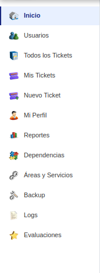
PANTALLA 2: Menú Lateral Administrador
3. Inicio
Aqui se muestra estadísticas generales del sistema:
- Total de Usuarios: Cantidad total de Usuarios en el sistema.
- Total de Tickets: Cantidad total de tickets en el sistema
- Tickets Nuevos: Tickets que recientemente se han creado.
- Tickets Asignados: Tickets que están en proceso y ya tienen un técnico Asignado
- Tickets Cerrados: Tickets que han sido resueltos
- Tambien se mostrara una lista con las Actividades Recientes
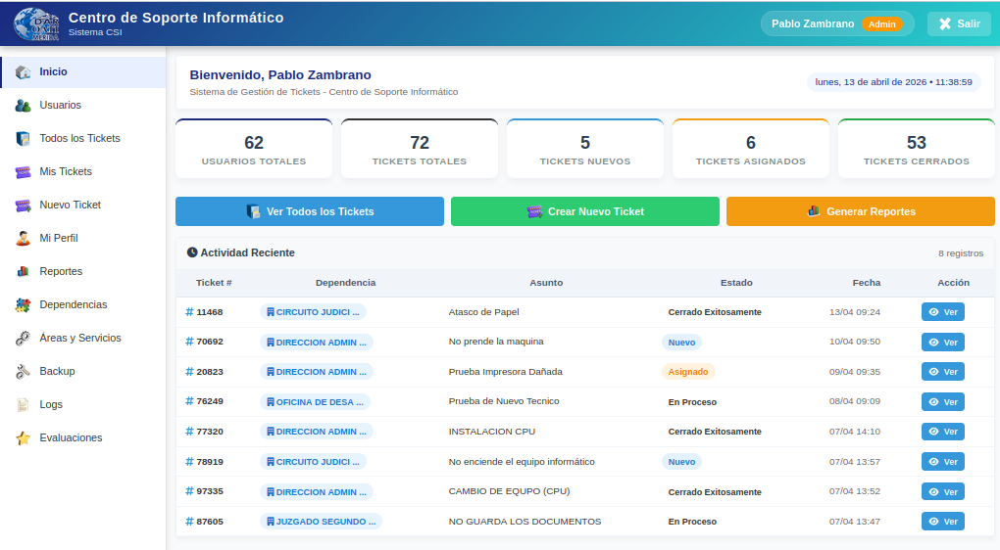
PANTALLA 3: Inicio Administrador
4. Gestión de Usuarios
En esta sección puede administrar todos los usuarios del sistema.
4.1 Ver usuarios
- Haga clic en "Usuarios"
- Verá la lista de todos los usuarios
- Cada usuario muestra: nombre, usuario, rol, correo, estado
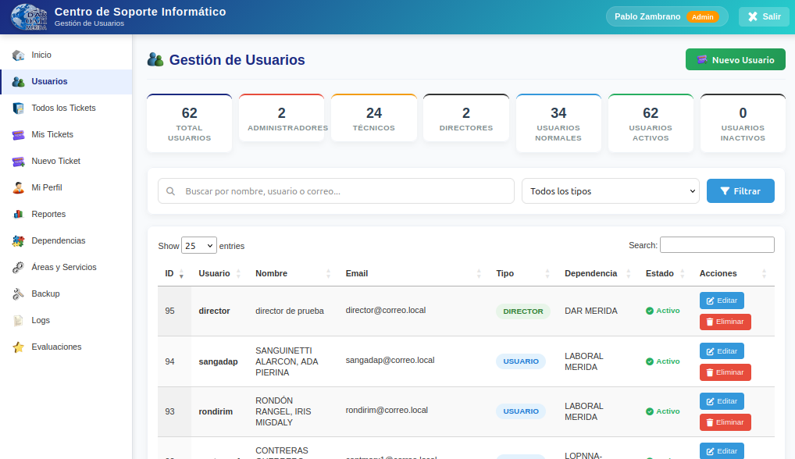
PANTALLA 4: Gestión de Usuarios
4.2 Crear usuario
- En la página de usuarios, haga clic en "Nuevo Usuario"
- Complete los datos: nombre, usuario, correo, contraseña, rol
- Los roles disponibles: Usuario, Técnico, Administrador
- Guarde el usuario
4.3 Editar usuario
- Haga clic en el usuario que desea editar
- Modifique los campos necesarios
- Guarde los cambios
4.4 Eliminar usuario
- Haga clic en el botón de eliminar del usuario
- Confirme la eliminación
Importante: Solo puede eliminar usuarios que no tengan tickets asociados.
4.5 Filtros de búsqueda
- Buscar por nombre o usuario
- Filtrar por rol (Usuario, Técnico, Administrador)
- Filtrar por estado (Activo, Inactivo)
5. Todos los Tickets
Esta sección muestra todos los tickets del sistema, independientemente de quien los haya creado o atendido.
5.1 Ver todos los tickets
- Haga clic en "Todos los Tickets"
- Verá la lista completa de tickets
- Cada ticket muestra: número, solicitante, asunto, técnico, estado, prioridad, fecha
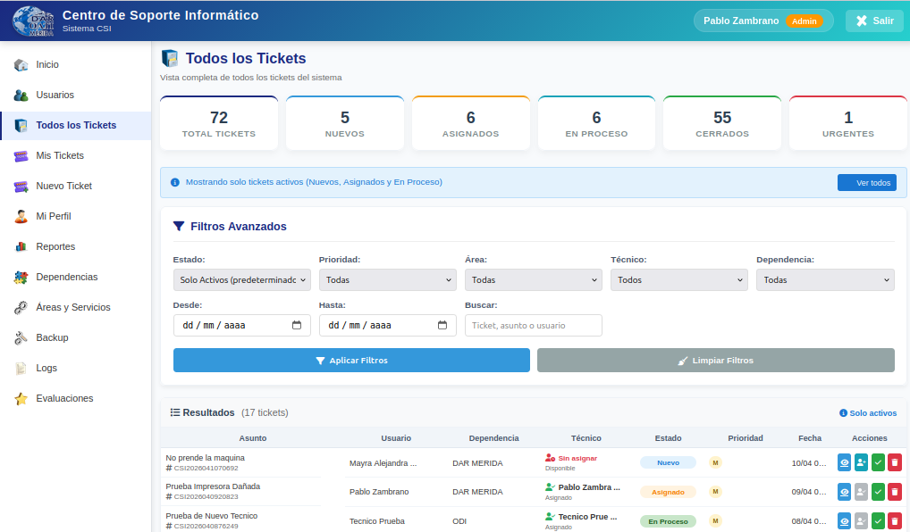
PANTALLA 5: Todos los Tickets
5.2 Estados de un ticket
| Estado | Descripción |
|---|
| Nuevo | Ticket creado, sin asignar |
| Asignado | Ticket asignado a un técnico |
| En Proceso | Técnico trabajando en el ticket |
| Cerrado Exitosamente | Problema resuelto |
| Cerrado No Exitoso | No se pudo resolver |
5.3 Número de Bien y Serial en Tickets
Los tickets pueden incluir información del bien nacional asociado:
- Número de Bien: Código del bien registrado en la institución (formato: 03-28-7258)
- Serial: Serial del equipo
- Búsqueda automática: Al hacer clic en la lupa
 , el sistema busca en INTRADAR y completa automáticamente el otro campo junto con la descripción del bien
, el sistema busca en INTRADAR y completa automáticamente el otro campo junto con la descripción del bien
- Si se encuentra el bien, aparece un check de confirmación

5.4 Filtros disponibles
- Filtrar por estado
- Filtrar por prioridad
- Filtrar por técnico
- Filtrar por dependencia
- Búsqueda por número de ticket o asunto
5.4 Asignar técnico
Como administrador, puede asignar tickets a técnicos:
- Haga clic en un ticket
- En la sección de asignación, seleccione el técnico
- Guarde los cambios
6. Reportes
El sistema permite generar diversos reportes y gráficos estadísticos.
6.1 Tipos de reportes
- Reporte General: Estadísticas globales del sistema
- Reporte por Técnico: Rendimiento de cada técnico
- Reporte por Dependencia: Tickets por dependencia
- Reporte por Área: Tickets por área de soporte
- Reporte de Evaluaciones: Calificaciones recibidas
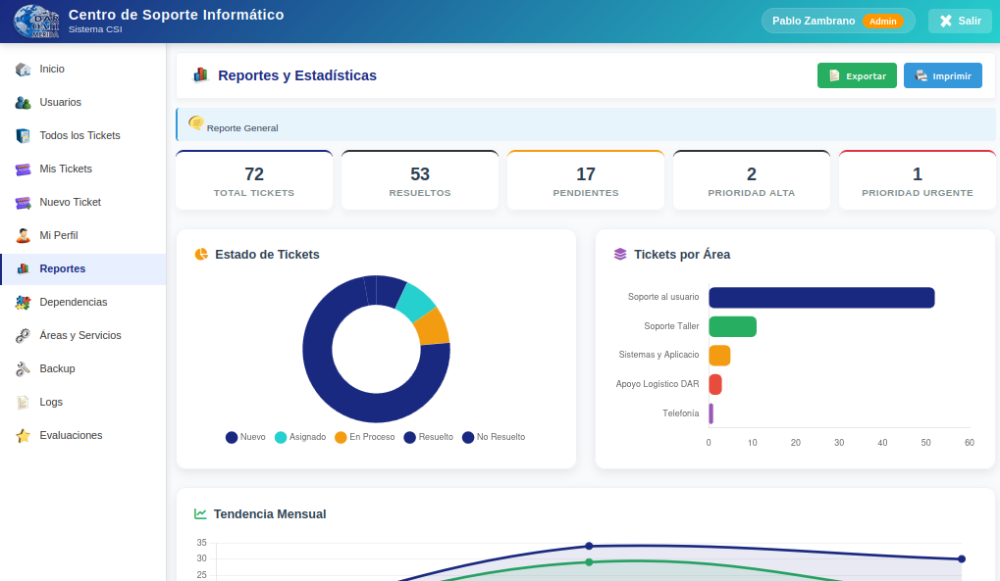
PANTALLA 6: Reportes
6.2 Gráficos disponibles
- Gráfico de pastel: Distribución por estado
- Gráfico de barras: Tickets por prioridad
- Gráfico de barras: Rendimiento por técnico
- Gráfico de evaluaciones: Calificaciones recibidas
7. Dependencias
Administre las dependencias (lugares físicos) del sistema.
7.1 Ver dependencias
- Haga clic en "Dependencias"
- Verá la lista de todas las dependencias
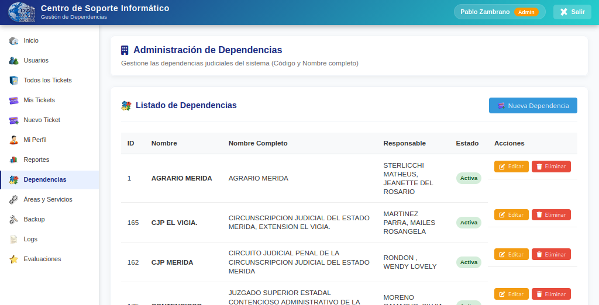
PANTALLA 7: Dependencias
7.2 Crear dependencia
- Haga clic en "Nueva Dependencia"
- Ingrese el nombre de la dependencia
- Guarde la dependencia
7.3 Editar dependencia
- Haga clic en la dependencia que desea editar
- Modifique el nombre
- Guarde los cambios
7.4 Eliminar dependencia
- Haga clic en el botón de eliminar de la dependencia
- Confirme la eliminación
Importante: No puede eliminar dependencias que tengan tickets asociados.
8. Áreas y Servicios
Administre las áreas de soporte y los servicios específicos.
8.1 Ver áreas y servicios
- Haga clic en "Áreas y Servicios"
- Verá la lista de áreas con sus servicios asociados
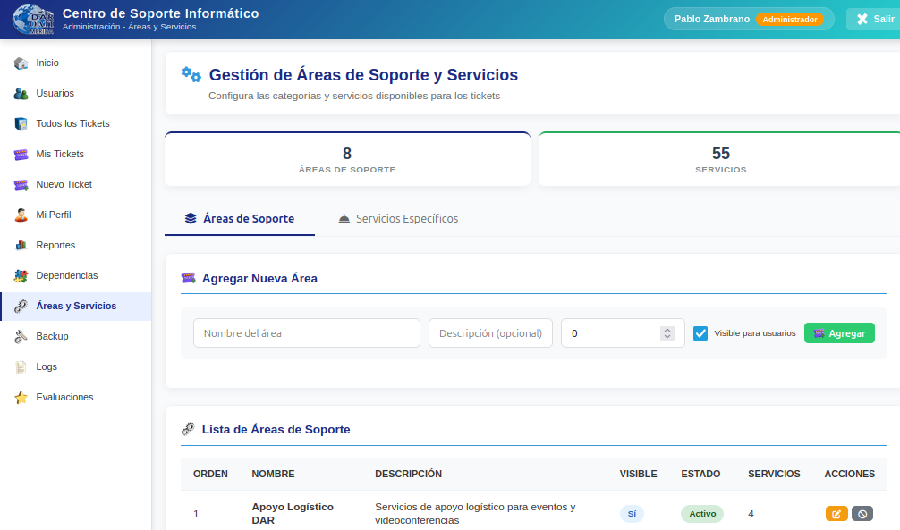
PANTALLA 8: Áreas y Servicios
8.2 Crear área
- Haga clic en "Nueva Área"
- Ingrese el nombre del área
- Guarde el área
8.3 Crear servicio
- Seleccione un área
- Haga clic en "Agregar Servicio"
- Ingrese el nombre del servicio
- Guarde el servicio
8.4 Editar y eliminar
Puede editar o eliminar áreas y servicios haciendo clic en los botones correspondientes.
9. Backup
Realice respaldos de la base de datos del sistema.
9.1 Generar backup
- Haga clic en "Backup"
- Haga clic en el botón "Generar Backup"
- El sistema creará un archivo de respaldo
- Guarde el archivo en su computadora
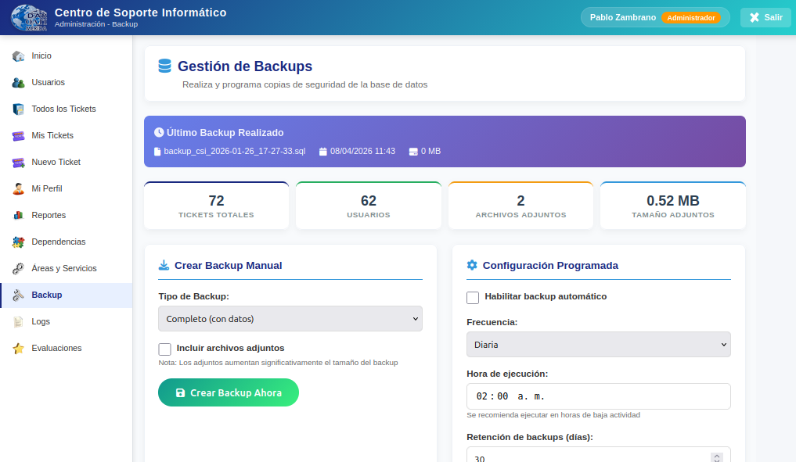
PANTALLA 9: Backup
Nota: Se recomienda realizar backups periódicos para mantener la seguridad de los datos.
10. Logs
Consulte los registros de actividad del sistema.
10.1 Ver logs
- Haga clic en "Logs"
- Verá el historial de actividades del sistema
- Cada registro muestra: fecha, usuario, acción, descripción
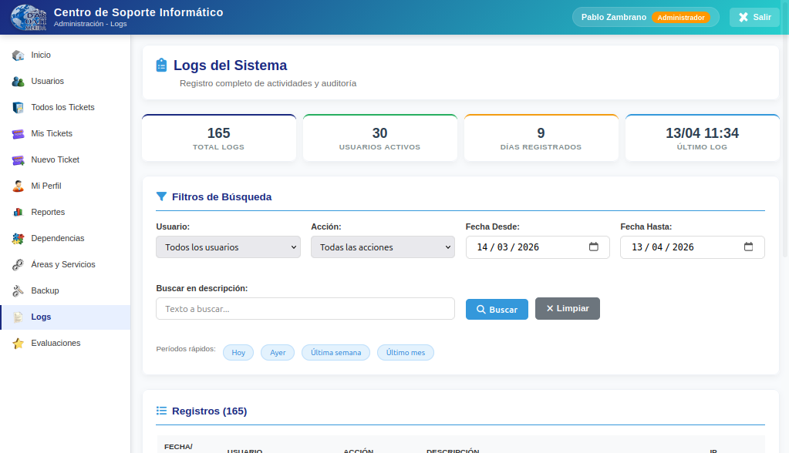
PANTALLA 10: Logs
10.2 Filtrar logs
- Filtrar por fecha
- Filtrar por usuario
- Filtrar por tipo de acción
11. Evaluaciones
Consulte las evaluaciones que los usuarios han realizado sobre los técnicos.
11.1 Ver evaluaciones
- Haga clic en "Evaluaciones"
- Verá la lista de todas las evaluaciones
- Cada evaluación muestra: ticket, técnico, calificación, comentario, fecha
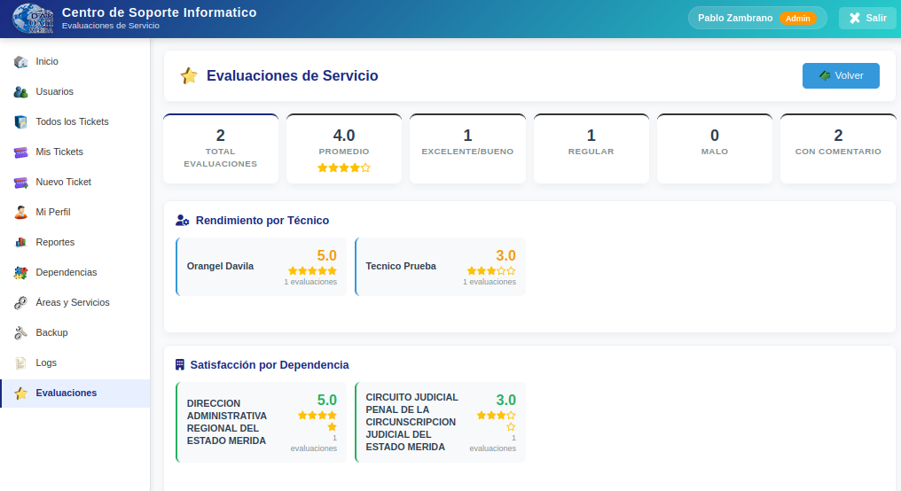
PANTALLA 11: Evaluaciones
11.2 Estadísticas de evaluaciones
- Calificación promedio por técnico
- Distribución de estrellas (5, 4, 3, 2, 1)
- Total de evaluaciones por técnico
11.3 Filtros
- Filtrar por técnico
- Filtrar por calificación (estrellas)
- Filtrar por fecha
12. Mi Perfil
Administre sus datos personales:
- Haga clic en "Mi Perfil"
- Actualice: nombre, correo electrónico
- Cambiar contraseña: ingrese contraseña actual y nueva
- Guarde los cambios
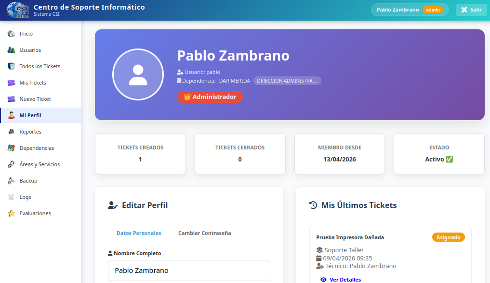
PANTALLA 12: Mi Perfil
 Inicio
Inicio Todos los Tickets
Todos los Tickets Nuevo Ticket
Nuevo Ticket Mi Perfil
Mi Perfil Reportes
Reportes